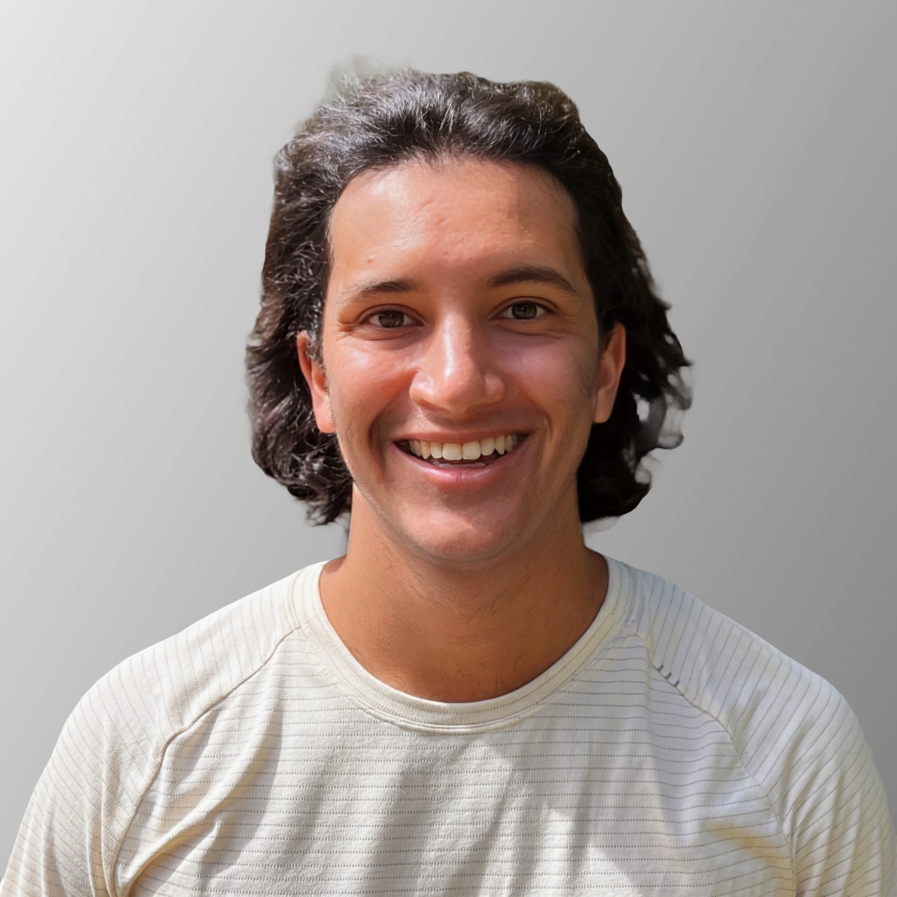

Three degrees building comprehensive healthcare expertise: clinical practice, public health systems, and pre-medical sciences
Most nurses bring clinical training. I also bring a decade of asking why the system beyond the hospital walls keeps failing the same patients.
I don't just see individual cases. I see patterns, upstream factors, and system failures. My MPH taught me why disparities exist. My nursing training showed me how to address them at the bedside. Leading SDOH EHR integration at Activate Care, affecting thousands of patients across hundreds of providers, means I arrive already thinking in systems.
Sarah Decker, one of my clinical faculty, wrote that I "naturally connected clinical findings to broader processes — discharge education, patient behavior change, and chronic disease management." She noted that this systems orientation, paired with emerging clinical judgment, allowed me to anticipate needs and contribute meaningfully during huddles, pre-briefs, and debriefs. That is exactly the nurse I am working to become.
Before I looked at a single data point, I read the room. A mother had brought her son in with a sickle cell pain crisis, and within the first interaction I could feel the weight she was carrying: the bracing, the expectation that she would have to fight to be heard, the quiet signal that this had happened before. I asked her to walk me through the last couple of visits. What she told me was not a complaint. It was a pattern.
That pattern sent me to my preceptor. When I did not hear back after thirty minutes on an urgent message, I went to the charge nurse. I brought what I had observed alongside the objective picture: pain scores consistently eight to ten, vitals trending in the wrong direction, and a documented body of evidence showing that Black patients with sickle cell disease face real disparities in pain management. I was not accusing anyone. I was making the case clearly enough that it could not be set aside. The pain was addressed within forty-five minutes.
Evidence is not just for research. It is how you give a family's experience the weight it deserves when the system is slow to respond.
My parents came to America as college students in the Midwest without citizenship. They happened to be scientists. It still took them twenty years to become citizens. What they showed me growing up was not just the barriers immigrants face in healthcare. It was how many systems a person has to navigate simultaneously: immigration, education, employment, housing, healthcare, each one with its own language, its own gatekeepers, and its own way of making you feel like you do not quite belong. That lived education did not end when they got their citizenship. It became the lens I carry everywhere.
I am a first-generation American with Colombian, Spanish, Indian, and Kenyan roots, bilingual in Spanish, and genuinely fluent in navigating spaces that were not designed with people like my parents in mind. When a patient or family feels unseen in a clinical setting, I recognize it immediately. Not because I studied it. Because I grew up watching it happen to people I love.
During my pediatric ED preceptorship, I cared for a Spanish-speaking family whose child was in acute crisis. As I explained what was happening in their language, I watched the parents' posture shift. Their questions came freely. The fear did not disappear, but the isolation did. Language access is not a courtesy. In a high-acuity setting where clarity is safety, it is a clinical intervention.
I don't just develop ideas. I build things that get used. My MPH capstone was a school-wide mindfulness curriculum integrated into an elementary school, designed around stakeholder barriers and measured for actual outcomes. After graduation I trained over a hundred clinicians on SDOH-integrated EHR workflows at Activate Care. At Gateway 180 I developed an evidence-based wellness screening tool adopted by shelter leadership to improve health outcomes for families experiencing homelessness. Three different settings, three different populations, same approach: design for the real world or it won't stick.
Dr. Niemeyer wrote that this work demonstrated "an extraordinary level of initiative, creativity, and compassion" and reflected "systems-level thinking rarely seen at the undergraduate level." I also partnered with the shelter's Volunteer Coordinator to design strategies reducing staff burnout, because sustainable care requires caring for the people delivering it too.
It did not start in nursing school. For years before I ever set foot in a hospital as a clinician, I coached underserved youth at Athletic Scholars Academy, integrating health education and wellness into an after-school soccer program. The kids who showed up were not just there for soccer. They needed someone to see them. That taught me something about presence that no clinical course ever could.
Dr. MaryAnn Niemeyer, who nominated me for the Ruth G. Franc Kindness Award, wrote that my contributions were "grounded in kindness, empathy, and respect." A second faculty mentor independently noted "authentic care" and "genuine warmth." Two people, two different settings, the same observation. Kindness is not softness. It is seeing people when systems make them invisible.
It is also how I built enough trust with a chronically ill patient, over three shifts, that he asked for me by name when it was time to place his NG tube.
"Receptive to feedback." "Responds thoughtfully." "Uncommon poise." Clinical Faculty, Goldfarb School of Nursing. I grew from a reserved new student to a confident clinician in twelve months. When my preceptor said move faster, I implemented her strategies the next shift and never looked back. Twenty years of competitive soccer taught me that feedback is not criticism, it is coaching, and that the best teams are built on people who make each other better. Growth is not always comfortable. I lean into it anyway.
What I also learned across those twelve months is that nursing exposes you to dozens of styles, approaches, and clinical philosophies. I precepted one on one with nurses across different units. I borrowed what worked, asked why behind every decision, and sometimes made a deliberate choice that a different approach fit my practice better. That discernment, coachable but not passive, is still developing. But I arrived at it faster by staying genuinely curious.
Barnes-Jewish Hospital holds top-20 U.S. News rankings in 14 of 16 specialties. St. Louis Children's is nationally ranked in 10 pediatric specialties. 600 clinical hours at Magnet-designated academic medical centers. 204 of them on the same floor, with the same team, building real continuity of care and learning.
Sickle cell crises, severe asthma, burns, behavioral health emergencies, and trauma. One of the country's busiest pediatric EDs, where every shift required calm hands and a faster mind.
Four to six complex patients per shift. Telemetry, post-op recovery, chronic disease, and end-of-life care. The floor that teaches you what you're made of.
Across two units, managing patients whose conditions rarely came one at a time. Advanced wound care, medication management across all routes, and discharge planning that started at admission.
Patients navigating crisis, stigma, and systems that often failed them before they arrived. Therapeutic communication, de-escalation, and trauma-informed care in an inpatient setting.
Postpartum care, newborn assessment, and family-centered education during some of the most emotionally loaded hours families will ever experience.
Pediatric and adolescent patients managing endocrine conditions, chronic disease, and acute illness that hadn't yet found a name.
SDOH-focused care for families experiencing homelessness. Developed an evidence-based wellness screening tool adopted by shelter leadership to improve health outcomes and resource allocation.
Adult ICU, Neuro ICU, PCU, NICU, PICU, and PACU at Barnes-Jewish and St. Louis Children's (2025). Emergency Department and Pediatric Neurology ICU at MetroWest Medical Center and Boston Children's Hospital (2011–2015). The beginning of a question that took fifteen years to answer.
Every stop was intentional. Every stop brought something back.
Shadowed physicians and nurses at Boston Children's Hospital and MetroWest Medical Center through high school and college. An attending told me: understand why people get sick before you learn how to treat them. That question became a career.
Saint Louis University (SLU). Stopped asking clinical questions. Started asking systemic ones.
SLU College for Public Health and Social Justice. Confirmed what the data already showed: the system produces exactly what it was designed to produce. Policy, power, and politics shape who gets sick and who gets care. That is not a theory. It is a diagnosis.
Spent four years at Activate Care building the infrastructure that sits between a care team flagging a social need and something actually happening about it. Closed-loop referral management, SDOH screening workflows, EHR integrations connecting clinicians and community-based organizations across the country. Trained over a hundred nurses, physicians, and community health workers to use tools designed to close gaps that medicine alone never could. Meaningful work. But I was too far from patients and too far from the care teams I respected most.
Stayed on with Activate Care as a contractor, then took on an early-stage product role with a developer-founder building an algorithm-less social platform. The kind of opportunity most product people would jump at. Genuinely interesting work. Built real skills. Did not fill the cup. While that chapter was playing out I was supporting my wife through pregnancy, learning Python, completing a data analytics and visualization certificate through UC Berkeley Extension. Our daughter was born in fall 2023. I was able to be with her for her entire first year, which turned out to be the most clarifying twelve months of my life. By the time she was walking, I knew exactly where I needed to be.
My wife, an ICU nurse since 2018, had been saying it for years: real change happens at the bedside. She was right. With our daughter's first year behind us, I made the leap to St. Louis alone. She stayed in the Bay with our daughter. We had a plan and we committed to it.
1 year in the BJC and Washington University academic medical system. 600 hours. Cum Laude. Kindness Award. Sigma Theta Tau. Came home.
Licensed. Certified. Looking for the right team.
Independent validation from two experienced nursing educators
Seeking a new grad nurse position where I can master bedside excellence while contributing systems-level thinking to quality improvement and health equity initiatives.